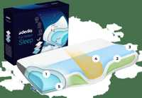

Derila Memory Foam Pillow Scam or Legit? The Shocking Truth Exposed (2026 Review)

Click Here to Check Official Batch Availability →| Product Name: | Derila Memory Foam Pillow |
| Editorial Score: | 4.8 / 5.0 ⭐⭐⭐⭐⭐ |
| Primary Purpose: | Targeted Bioactive Health & Vitality Formula (Natural Health & Dietary Supplement) |
| Manufacturing / Delivery: | c-GMP Certified, FDA-Registered Facility (USA) |
| Guarantee Shield: | 100% Risk-Free Money-Back Guarantee |
| Official Portal: | Verified Direct Manufacturer Website → |
Derila Memory Foam Pillow Reviews
Derila Memory Foam Pillow Reviews – Derila Memory Foam Pillow is a high-quality pillow that uses advanced memory foam technology to straighten and support your spine in its natural position, reducing pain and improving sleep.
Official Website:Click Here
Derila Memory Foam Pillow Reviews | |
Product Name | Derila Memory Foam Pillow |
About | Derila Memory Foam Pillow is a wonderful, supportive pillow that helps you sleep peacefully. |
Overall Rating | ⭐⭐⭐⭐☆ 4.7/5 |
Features |
|
Main Benefits |
|
Pros | It is made with high quality material and is a very comfortable and affordable price. |
Availability | Online through the official website. |
Price | $35.95 |
Money-Back Guarantee | 30 Days |
Official Website | |
What is Derila Memory Foam Pillow?
Derila Memory Foam Pillow is a unique cushion-like pillow that fits your spine’s natural curve.This amazing pillow’s memory foam conforms according to your weight and form to give you the good support you need to sleep peacefully.
The most efficient ergonomic design offers sufficient support to your back, neck, and head support. It maintains your posture as you sleep, and that will also to enabling you to awake pain-free and limber.
If you are habituated to feeling tired, exhausted, and stiff in the mornings following a bad night’s sleep, this Derila Memory Foam Pillow is the right one for you that will also easily transform how you wake up for good.
This comfy pillow also uses strong superior memory foam, which lets you sink into it pleasantly while maintaining support and the unique shape and providing much more support for the head and neck.
How does Derila Memory Foam Pillow help you?
Derila Memory Foam Pillow contours to the natural curvature of your spine, and memory foam responds to your weight and contour and will provide the assistance you need to sleep pain-free.
If your spine ends up bending or twisting abnormally, standard pillows don’t give adequate support and typically result in pain, discomfort, and restless sleep.
But the Derila Memory Foam Pillowemploys state-of-the-art memory foam technology to support and dynamically align your spine, minimizing discomfort and improving sleep.
The highest quality material is formulated to promote restful sleep. It will also to contours to the natural curve of your spine, and that will also to helping your body to have your body aligned properly and may change your ability to sleep.
Suppose you’re used to feeling stiff, dizzy, and achy in the days after a bad night’s sleep. In that case, Derila is the pillow that will transform the way you wake up as it adapts to your natural body stature, providing you the restful sleep you require, eventhough you like sleeping on your back, side, or stomach.
- Ergonomic Design
- Premium memory foam
- Easy to Travel
- Easy to Clean
- Suitable for all sleeping positions
What are the Features of the Derila Memory Foam Pillow?
Below are some Derila Memory Foam Pillow features that take this pillow to the next level, which gives you the comfort zone. Let’s check out some of the Derila Memory Foam Pillow parts.
- High-density foam pillow: This Derila Memory Foam Pillow is the premium memory foam that conforms to your weight and shape to give you the proper spine shape.
- Butterfly mounting wings: The Derila accommodates based on that even if you are the side, back, and stomach sleepers because of its side wings. Even if you choose to sleep on your back, side, or stomach and will still provide you with a good night’s sleep.
- Excellent sleep height: It will also maintain your neck properly for a natural sleeping position. The cushion may be adjusted to fit comfortably around the head and neck to keep a straight neck and spine. You sleep better as a result.
- Neck Nook: It will gently cradle your head to lessen snoring, waking, and uneasiness. Having your head wrapped in it as you nap will reduce frequent twisting and turning or being restless.
- Chill outer later: The outer layer of the Derila Memory Foam Pillow is mainly to provide you with a cooling effect. And it will also to reducing any harm that too much heat can pose to your capacity to sleep.
Benefits of Derila Memory Foam Pillow
The outstanding design and many benefits make the Derila Memory Foam Pillow more efficient, and that will also let you feel the amazing result.
- Improves your sleep quality: The significance of obtaining adequate sleep for stress management and tackling the stress hormone cortisol is reduced. Additionally, growth hormone is produced to contribute to the development of healthy bones, red blood cells, and muscular strength. Mainly to give you a complete and relaxed sleep.
- Reduce muscle pain and headaches: Back discomfort and tension headaches can result from poor sleeping positions, particularly if stress is present, which will seriously affect your sleep. But with the help of, the Derila Memory Foam Pillow provides tailored support to ease discomfort.
- Deal with snoring: Regular pillows cause additional snoring since they don’t promote the proper neck posture. Derila helps clear clogged nasal passages and stop snoring.
- Sleep on-the-go: It is perfect for commuters and tourists even though it is portable, letting you get a good night’s sleep even when driving or flying. So you can also take it anywhere to anyplace.
- Durability: Derila Memory Foam Pillow comes with high quality material, effectively making it useful and supporting a long-lasting result.
- Safe to Use: The Derila Memory Foam Pillowpillow provides exceptional durability in combination with its capacity to modulate temperature and offer optimal comfort. If individuals can observe the maintenance and cleaning recommendations for using this premium memory foam, they may increase the lifespan of the Derila Pillow for a very long time.
Drawbacks of Derila Memory Foam Pillow
- Derila Memory Foam Pillow is available for purchase only from the official website.
- Get the complete detail about the Derila Memory Foam Pillow before your purchase.
Derila Memory Foam Pillow Customer Reviews:
Elizabeth M.
![]()
A great pillow that feels soft but is truly supportive. I’ve slept so much better since having it.
William P.
I have been looking for the perfect pillow for years! The pillow molds to your neck no matter how you sleep. Love it!! (Click to Order Now)
Matt D.
I’ve bought a few memory foam pillows, but this is the first one that’s held my neck in the right position.
Cost & Discounts of Derila Memory Foam Pillow:
Get a specific product from visiting the official website to placing your order. It is simple to make and purchase your elegant memory foam pillows by going to the Derila Pillow website.
The pillows are simple to wash and dry. Derila Memory Foam Pillow comes with a 50% Discount, which is applied for a short period, so you have to get it as soon as possible before the deal ends! Never miss the deal!
- 1x Derila Memory Foam Pillow is worth $35.95
- 2x Derila Memory Foam Pillow is worth $59.96
- 3x Derila Memory Foam Pillow is worth $75.96
- 4x Derila Memory Foam Pillow is worth $89.96 (Click to Order Now)
Where To Buy Derila Memory Foam Pillow?
The manufacturer’s official website is the only site to purchase the genuine Derila Memory Foam Pillow, and no other website sells this product. Do not purchase this memory foam pillow from any vendor other than the one listed on this official website.
The company is also confident that you are getting the right product. Additionally, you will receive free delivery and a hassle-free 30-day return period when you buy from the supplier. In case you have any concerns. Tel.: +1(862) 329-7011
Your purchase is backed with:
- 100% Money Back Assurance
- Satisfaction Guarantee
- 50% Discount Per Unit
- Fast Shipping & Handling
- Easy Order Tracking
Why Should You Buy Derila Memory Foam Pillow?
When high-stress levels, you may frequently fall asleep in moving vehicles like cars or planes but also feel discomfortable. You are comforted when traveling with Derila. You may carry it around with you because it is strong and lightweight.
Sometimes you may also take five minutes to fall asleep most nights, and it’s possible that your pillow isn’t cushioning you well enough. You will feel so comfy with the Derila Memory Foam Pillow that falling asleep won’t take long. And some other features which make this pillow more efficient.
Derila Memory Foam Pillow Reviews – Final Conclusion
Derila Memory Foam Pillow differentiates from a conventional pillow due to its exceptional characteristics and also the ergonomic design to built into its design. It also supports your head and neck as you sleep well because of the advanced memory foam customized for the back, side, or stomach.
As soon as you start using this Derila pillow, you’ll discover that it has a relaxing and soothing impact on your neck, shoulder, and other troubled regions.
Long-term use of the pillow can increase your general well-being and provide discomfort and inflammation relief for your body. Moreover, you will also get the Derila Memory Foam Pillow and the one month of cash-back assurance which is safe and will shield your invested money.
Get the sleep-friendly supporting Derila Memory Foam Pillow now!
FAQ:
Is this good for travel?
Yes! The Derila Memory Foam Pillow is portable and lightweight, which makes you carry this anywhere at any place and easy to carry.
Will this Derila Memory Foam Pillow helps back and neck pain?
One of the leading causes of discomfort is poor sleeping position. The Derila pillow helps to support your spine during the night.
Therefore it also helps to lessen back and neck stiffness, tension headaches, and shoulder pain. So it will be helpful.
Is this good for travel?
Yes! The Derila Memory Foam Pillow is incredibly lightweight. It may be used anywhere, making you feel more comfortable on airplanes or in a car. Any sleeping posture will do as per your sleeping type.